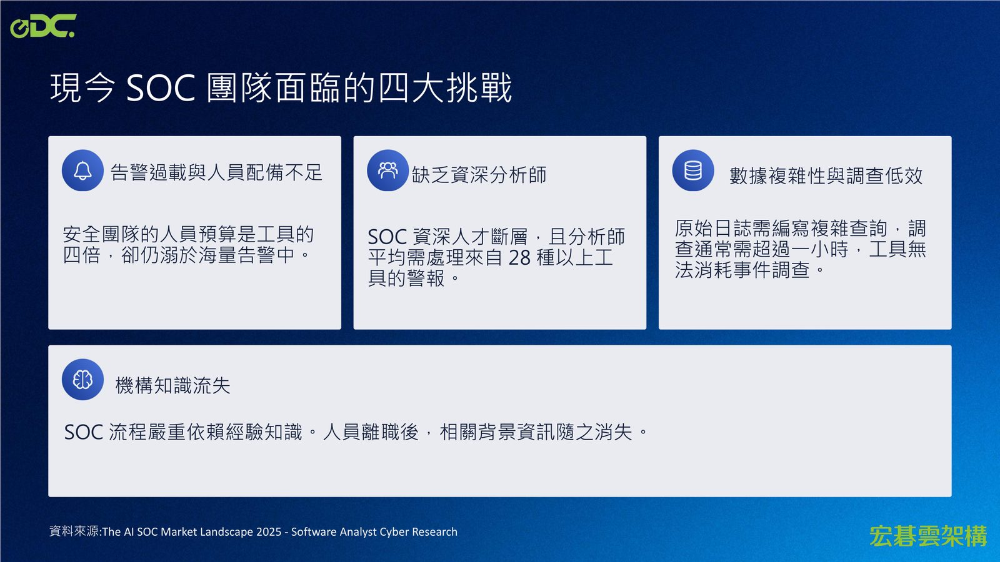
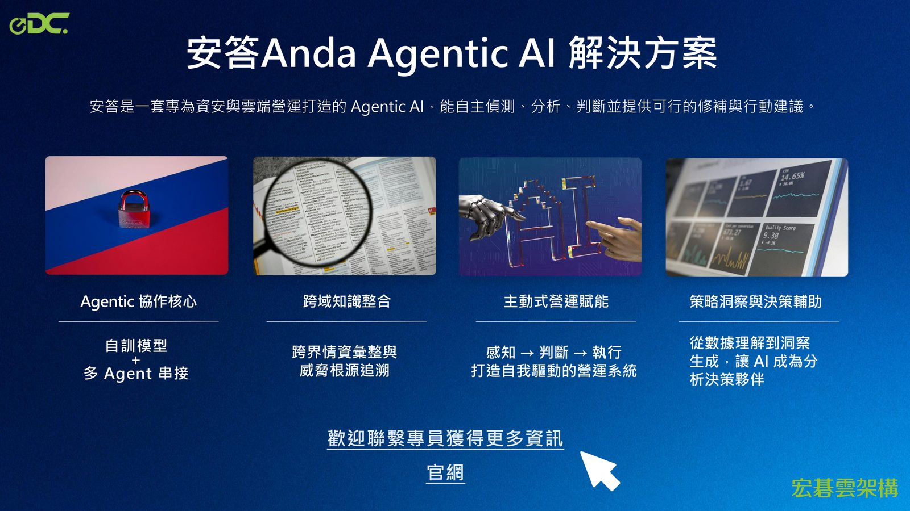
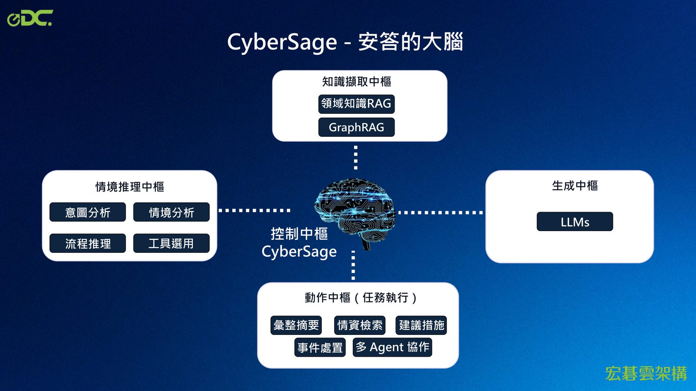
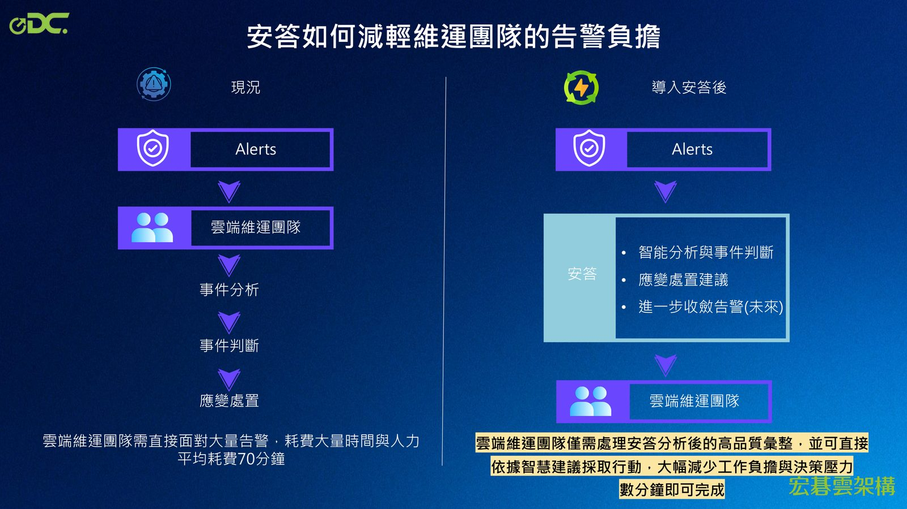

摘要
本場演講介紹了「安答」（Anda）——一套專為資安與雲端營運打造的 Agentic AI 解決方案，說明其如何從單純的問答工具演進到能自主偵測、分析、判斷並提出修補建議的多代理系統。內容涵蓋現今 SOC 團隊面臨的告警過載、人才斷層與知識流失等挑戰，並展示安答的核心大腦 CyberSage 如何透過多 Agent 協作大幅縮短事件處理時間。
重點整理
- SOC 分析師平均需處理來自 28 種以上工具的警報，且調查通常耗時超過一小時
- 安答導入後可將雲端維運團隊的告警處理時間從平均 70 分鐘縮短至數分鐘
- 安答的大腦 CyberSage 結合情境推理、知識擷取與多 Agent 協作，串接領域知識 RAG、GraphRAG 與 Gemini 等 LLM
- 安答採用蒸餾模型，強調高準確率、低資源消耗，並具備 25 年台灣在地資安實務經驗與完整中文支援
- 與其他資安 AI 競品相比，安答在成本部署、在地經驗與整合彈性上更具優勢
重點圖片／架構圖




從工具到自主行動者的演進
演講一開始說明大型語言模型應用解決方案的演進路徑：從「Without Agent」僅能處理非常簡單的單次任務（如將日誌轉為 JSON），到「Single-Agent」處理明確範疇的重複任務，再到「Multi-Agent 系統」能結合多項技能處理複雜情境，例如偵測到可疑登入時自動交叉比對身分風險、檢查雲端服務行為並提出修補方案。這個演進脈絡點出 Agentic AI 相較傳統 SIEM/XDR 工具的價值所在。
SOC 團隊的四大挑戰
現今 SOC 團隊面臨告警過載與人員配備不足（安全團隊人員預算是工具的四倍，卻仍溺於海量告警中）、缺乏資深分析師（人才斷層，且分析師平均需處理來自 28 種以上工具的警報）、數據複雜性與調查低效（原始日誌需編寫複雜查詢，調查通常需超過一小時）、以及機構知識流失（SOC 流程嚴重依賴經驗知識，人員離職後背景資訊隨之消失）等問題。
安答（Anda）：專為資安與雲端營運打造的 Agentic AI
安答是一套自主偵測、分析、判斷並提供可行修補與行動建議的 Agentic AI 解決方案，其核心優勢包括跨域知識整合（跨界情資彙整與威脅根源追溯）、Agentic 協作核心（自訓模型加多 Agent 串接）、主動式營運賦能（感知到判斷到執行）、以及策略洞察與決策輔助。其大腦 CyberSage 整合控制中樞、情境推理中樞、知識擷取中樞、生成中樞與動作中樞（任務執行），支援事件處置、彙整摘要、情資檢索與建議措施等功能。
減輕維運團隊的告警負擔
現況下雲端維運團隊需直接面對大量告警，平均耗費 70 分鐘處理；導入安答後，安答先進行智能分析與事件判斷、提供應變處置建議，並可望進一步收斂告警，讓維運團隊僅需處理分析後的高品質彙整，並依智慧建議直接採取行動，數分鐘即可完成，大幅減少工作負擔與決策壓力。
差異化優勢：小模型更精準、更便宜、更彈性
演講比較安答與其他資安 AI 競品，指出安答採用蒸餾模型，針對 SOC 偵測與事件分析優化，兼顧高準確率與低資源消耗，且每次分析結果附上來源推論依據便於驗證信任；相較之下競品的模型回應結果常不一致、推論過程不可見。此外安答部署成本低、不受特定雲平台綁定，擁有 25 年台灣資安實務經驗與完整中文支援，並可整合多數 SIEM/SOAR 平台。